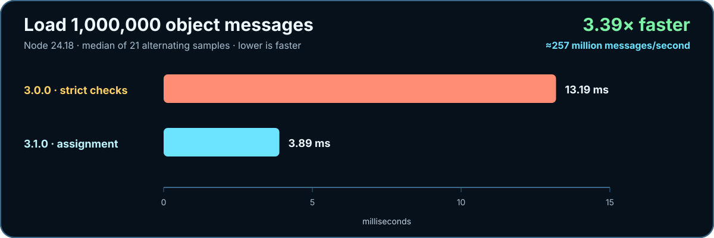
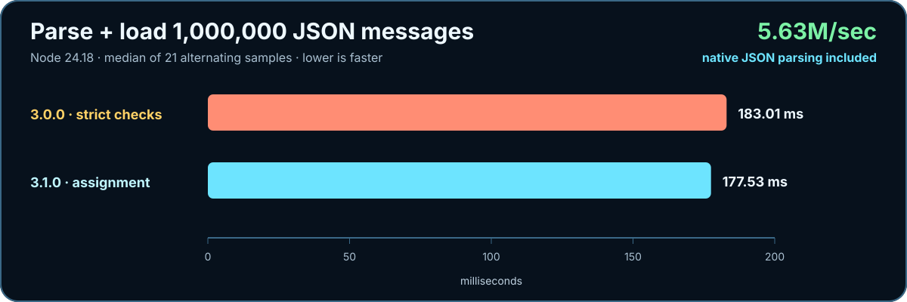
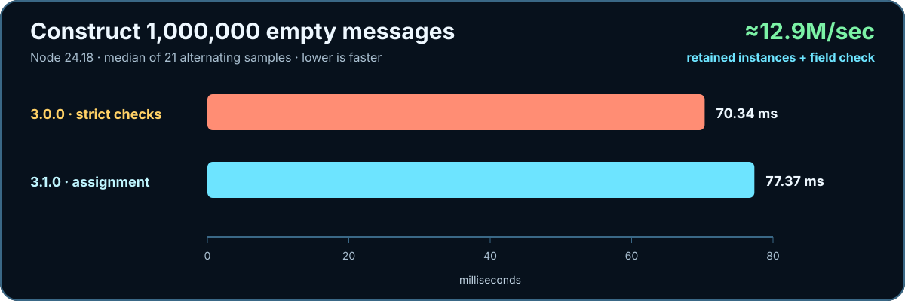

3.0.0 → 3.1.0
Blazingly small work at every boundary.
Version 3.1 removes the duplicate strict-envelope pass. Direct objects move faster, JSON parsing stays above five million messages per second, and optional fields work again.
js-message works with bundlers and without a bundler. Bundlers resolve bare imports normally; native browser ESM uses a standard import map with no build or transpilation step.
Recorded results
One million messages. Twenty-one alternating samples.
The published 3.0.0 source and the 3.1.0 candidate run in the same process. Lower elapsed time is faster.


JSON.parse dominates this path; 3.1 keeps it lean while restoring optional fields.
Reproduce it
One command, no benchmark dependency.
npm run benchmarkThe runner loads the exact 3.0.0 tag from Git, warms both implementations, alternates execution order, requests garbage collection between samples, validates output checksums, and reports the median.
Hardware, runtime flags, payload size, allocation patterns, and surrounding work change throughput. Run the command on the system you plan to ship.